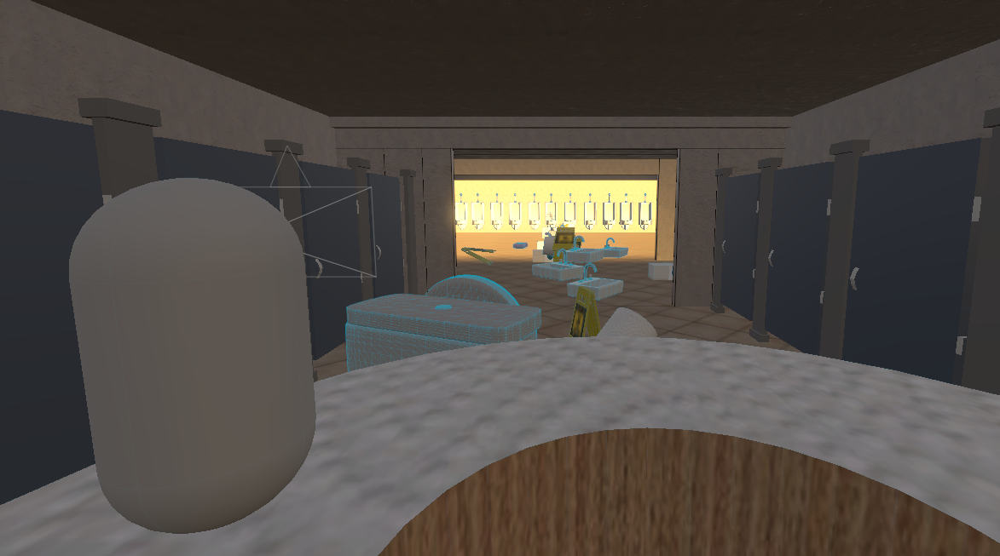

Proyecto N°1 · Scratch · El Perro Travieso

Un juego tipo whack-a-mole en el que tenés que atrapar al perro con un clic.
Hacé clic en el perro cada vez que aparezca para sumar puntos antes de que se termine el tiempo.
Soy Mateo Pradal y estudio Producción y Desarrollo de Videojuegos en la UNPAZ. Estos son los tres juegos que hice durante la cursada.
Un juego tipo whack-a-mole en el que tenés que atrapar al perro con un clic.
Hacé clic en el perro cada vez que aparezca para sumar puntos antes de que se termine el tiempo.

Maze Escape es un juego de aventura en el que tenés que escapar de una mazmorra.
Recorré el laberinto, encontrá la llave y enfrentate al guardián que protege la salida.

Un juego de plataformas 3D en primera persona. Sos un personaje diminuto atrapado en un baño donde el agua empieza a subir.
Saltá entre las plataformas y recogé los tres fragmentos de espejo antes de que te alcance el agua.